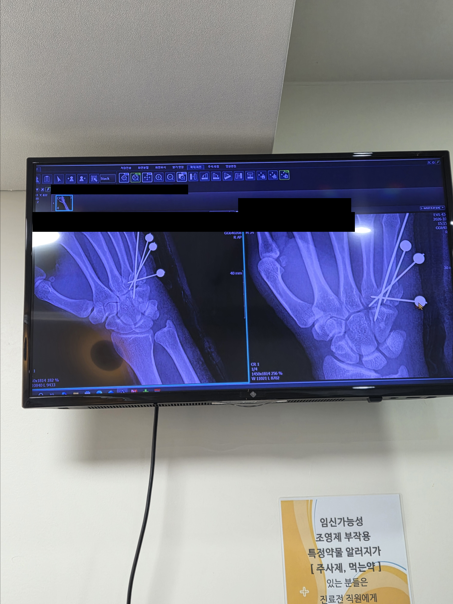

개인정보 가리고 올림...
붕대푼 사진은 혐오라서 안올렷슴당
오른쪽 손 못써서 우울증도 같은와버린건 덤..
인테리어나 전기작업 이런거 궁금한사람 아무거나 물어봐두댐

개인정보 가리고 올림...
붕대푼 사진은 혐오라서 안올렷슴당
오른쪽 손 못써서 우울증도 같은와버린건 덤..
인테리어나 전기작업 이런거 궁금한사람 아무거나 물어봐두댐
집에서 셀프로 우물조명, 실링팬 배선부터 따려고하는데 일반 신축 아파트에 살고있음.. 거실 등자리에 석고보드를 50x30정도로 잘라내고 천장 환기구쪽 열어서 GW배관 날리려는데 어떻게 날려야하냐.... 알류미늄?엠바인지 머시기가 ㅈㄴ 많아서 선이 날라가다가 계속 걸려버림. 그리고.. 디밍 t5를 무선 컨트롤러로 설치하고싶은데 도대체 어떤 제품을 써야해?.. 아무리 찾아도 알리꺼밖에 안나옴 ㅇㅅㅇ. 그리고 석고 뜯은자리는 합판 두깨 맞는거로 박아넣고, 빠대바르고 똑같은 도배지가 있어서 셀프로 스끼따기 해볼라는데 어케해야하냐!!!! 영업비밀 풀어라!!!
GW 배관날리는건 나도 잘몰라...
무선 컨트롤러 디밍 T5 위상제어이면 중국산은 꼬리형 위상제어라서 안맞을거야.. 디밍T5맞지? 그러면 그건 T5인데 IOT 일체형을 쓰거나 아니면 LED바에 스트립드라이버 달아서 쓰는제품군으로 바꿔야대
ioT계열은 에스알테크라고 그쪽이 제일 우리나라에서 많이하니깐 링크 줄게
https://smartliosen.com/index.html
https://thesafari.kr/product/detail.html?product_no=16&cate_no=143&display_group=1#none
위 링크에 있는 사육장을 쓰고 있는데 보통 좌측 소켓이 uvb라는 램프를 사용하고 우측 소켓이 스팟이라는 램프를 사용하는데 간만에 사육장을 쓰려고 전원 선을 연결했더니 좌측 소켓에 있는 uvb가 안 켜지길래 우측 소켓에 꽂아보니 uvb 램프는 정상이어서 그러는데 이런 경우엔 저 소켓만 사서 바꾸면 될까? 철물점에서 뭐라 말하고 사야될까
소켓 문제일 가능성이 높지 근데 나는 일단 체크를 혓바닥 체크부터 할듯 그 램프 e26 끼는곳 보면 아래에 위로 올라와있는게 있음 그게 아래에 눌려있으면 접점이 안붙어서 안켜질떄가 있음 롱노우즈같은걸로 당겨놓고 쓰면댈 가능성이 높음 꼭 전원은 내리고하시길!
https://m.sunbox.co.kr/web/product/extra/big/202007/2fb76349729e0110bcede1ef798f3bd1.jpg
요거 말하는 거구나
맞앙
전기공사업 면허 있음?? 요즘 공사업 허가도 안받고 전기공사하는 업자들 너무 많음
전 도매업자라 없슴니다 따려면 따는데 바빠서.. 공사도 직접안뛰어여 기능사만 있어도 왠만한곳은 다 시공은 가능할걸요?
전기공사업법에보면 경미한 공사 외에는 면허 업지만 할수 있음 참고로 전선 포설 등기구 교체도 법에 의하면 면허 가진 공사업체에서만 가능
그쳐 경미한거 빼고는 공사업 면허 있어야져
다만 국내에 가꼬있으신분 보다 그냥 뺀지들고 전기한다는 애들만 더 많이 봣어요
전 유통이라. 절대 공사는안함다
그거 등록하려면 돈마니 써야대서 그냥 주택인테리어 하는애들 대다수는 없을거에요
하루먹고 하루사는애들이 대다수라
사업자에 공사가 있어도 공사 등록안된 업체가 태반일거에요 그냥 회색지대라고 생각하시면 편해요
머하다 박살나심;
방등 120w 인데 너무 어두운데 추천하는 회사 있습니까?
아니 방등이 120인데 왜어두으신거죠? 사진받아보고싶네여/...
그냥 무난하게 동성꺼나 제품3사꺼 쓰셔도 무방합니다 필립스 오스람레드벤스 우리조명(장수)
싸구려사서 그런가.. ㅜㅜ 감사함둥
배선체크해바야대여 그거 반불들어온거 보고 그렇게 판단하신걸수도있어요 아 알려주곳싶은데 이건 사진이무조건필요해요
만약 120W 등이 전선 꼽는데가 3군데면 한쪽으로 같은선색상을 몰아주고 천장에 나와있는 2개선을 하나씩 꼽아주셔두 되구여
천장에 나와있는선이 3개면 공통선이 1개 스위치선이 2개일거에요 그거맞춰서 연결을 잘하셔야대여
인테리어해서 어제 입주했는데 스위치 하나가 끄고 키는 방향이 반대에요.
그리고 삼로 스위치 원래 되던거 하나가 필요조건으로 작동해요.
질문은 아니고 그냥 그렇다는 거에요. 슬퍼요.
스위치를 거꾸로 단거구여 삼로 스위치는 신호선을 어따가 팔아먹어서 이상한데 끼신거같은데 빨리 as받으십숑
나르면 답안나옵니다 잔금주지말구여
감사합니당
해수어항 산호 조명 너무 비싼데 대체 가능한
조명들좀 알려주세요
수중등은 방수조건 때매 비싸용
추가로 잘모르는 영역이라 검색해보니 비쌀만. 하네용
홈어시스턴스는 어떤가요? 분야가 개발쪽이라 못할거 같진 않은데 국내는 스마트싱스를 드 많이 쓰는거 같아서요
홈 어시는 말로하는것들 서브로 출력용이구여 로직은 스마트싱스로 구축 입니다
물리 스위치에 LED 리모컨 되는거 달았는데
LED 리모컨으로 끄면 잔불이 생겨, 물리 스위치는 안생김...
잔불제거기 3천원짜리 뭐 사서 달았는데도 똑같음 어캄 ㅠㅠ
모델이 벤트? 혹은 동성 3구 LED 리모컨 이런건가? 잔불은 출력값쪽에다가 콘덴샤를 달아야 잡힐거야 아니면 LED 리모컨이 아주 미세한 전류라도 흘리고 있는거라 LED 리모컨을 다른모델로 바꾸거나 조명을 정전압 조명같은걸로 바꾸거나 정전류 SMPS라도 들어간 조명을 쓰는걸 추천함
고생이 많으십니다
감사합니당
엌ㅋㅋㅋㅋㅋ 쇳덩어리침..